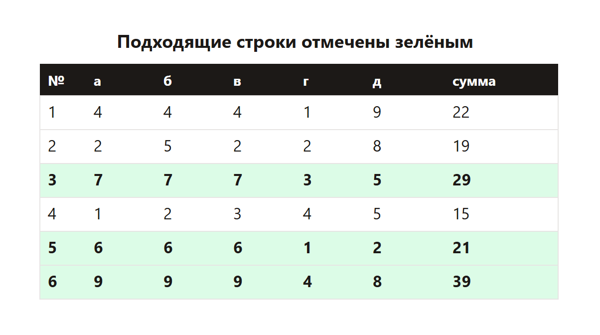
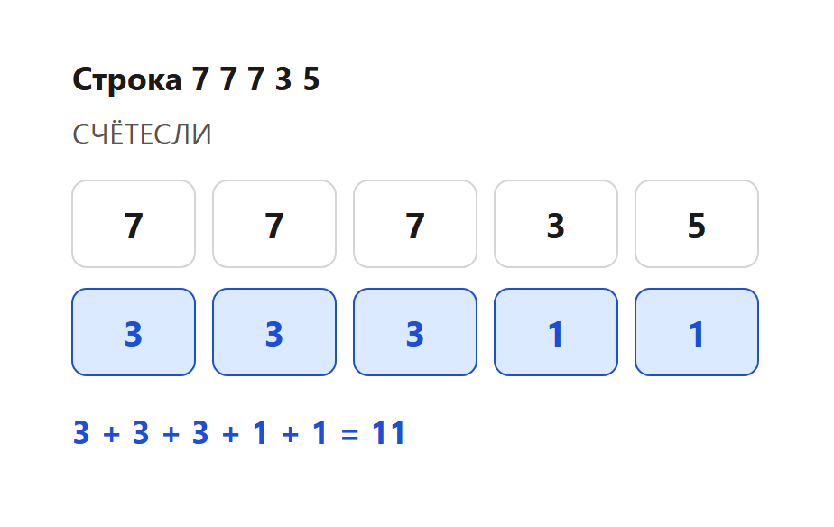

Дают файл с числами: в каждой строке несколько натуральных чисел. Нужно найти строки, которые подходят под оба условия, и посчитать сумму или номер.
В 2026 году файл — это .ods. Его открывают в LibreOffice Calc. Формулы те же, что привыкли видеть в таблицах: СЧЁТЕСЛИ, СРЗНАЧЕСЛИ, СУММ.
В каждой строке пять чисел. Строка подходит, если:

Подходящих строк три. У строки с наибольшим номером сумма 39.

Для пяти клеток с одной тройкой и двумя разными числами счётчики дают 3, 3, 3, 1, 1. Их сумма равна 11. Если сумма другая, тройка не одна или числа другие.
Потом СРЗНАЧЕСЛИ берёт среднее только тех чисел, которые встретились один раз, и сравнивает его с тройкой.
В Calc то же самое делает СЧЁТЕСЛИ. В программе у каждой строки считают, сколько раз встретилось каждое число. Подходящая пятёрка даёт счётчики 3, 3, 3, 1, 1. Их сумма 11. Потом среднее двух одиночных сравнивают с повторяющимся числом.
В ответ обычно берут сумму последней подходящей строки, не сумму всего листа.
Каждый фрагмент запускается отдельно. В конце он печатает ответ. Комментарии на русском говорят, какая строка за что отвечает.
rows = [
# МЕНЯТЬ: числа из файла. Здесь учебная таблица из теории.
[4, 4, 4, 1, 9],
[2, 2, 2, 5, 8],
[7, 7, 7, 3, 5],
[1, 2, 3, 4, 5],
[6, 6, 6, 1, 2],
[9, 9, 9, 4, 8],
]
def fits(row):
counts = [row.count(x) for x in row]
if sorted(counts) != [1, 1, 3, 3, 3]:
return False
triple = [x for x in row if row.count(x) == 3][0]
singles = [x for x in row if row.count(x) == 1]
average = sum(singles) / len(singles)
return average <= triple # МЕНЯТЬ: знак сравнения из условия
good = [row for row in rows if fits(row)]
print(sum(good[-1])) # последняя подходящаяЧто менять, если условие другое.
Программа печатает 39.
rows = [
[4, 4, 4, 1, 9],
[2, 2, 2, 5, 8],
[7, 7, 7, 3, 5],
[1, 2, 3, 4, 5],
[6, 6, 6, 1, 2],
[9, 9, 9, 4, 8],
]
def fits(row):
counts = [row.count(x) for x in row]
if sorted(counts) != [1, 1, 3, 3, 3]:
return False
triple = [x for x in row if row.count(x) == 3][0]
singles = [x for x in row if row.count(x) == 1]
return sum(singles) / len(singles) <= triple
print(sum(1 for row in rows if fits(row)))Что менять, если условие другое.
Программа печатает 3.
row = [7, 7, 7, 3, 5] # МЕНЯТЬ: любая подходящая строка
counts = [row.count(x) for x in row]
print(sum(counts)) # 3+3+3+1+1 = 11Что менять, если условие другое.
Программа печатает 11.